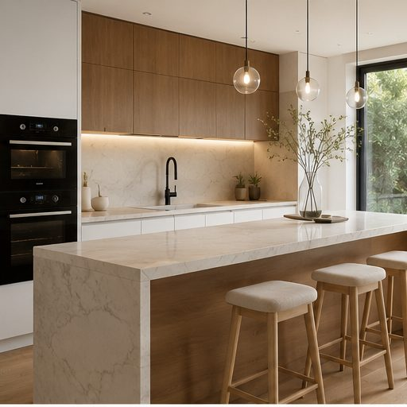

Taşınma Tutanağını Hazırla, Güvende Hisset
Eve girerken ve çıkarken evin durumunu oda oda fotoğrafla. Her kareye tarih, saat ve konum otomatik eklenir, birkaç dakikada imzalı bir PDF tutanak hazır olur. Depozito iadesinde tartışma yerine tarihli kayıt konuşur.
Android için. Araç ve diğer kiralamalar ile iPhone sürümü yakında.

20.10.2026 14:28Çıkışta tartışma yerine kayıt konuşsun
Taşınırken evin durumu çoğu zaman yalnızca hafızada kalır. Aylar sonra "bu çizik zaten vardı" demek, kayıt yoksa sadece bir iddiadır.
-
Ev, alındığı gibi teslim edilir
Türk Borçlar Kanunu'na göre kiracı, evi hangi durumda teslim aldıysa o durumda geri verir (m. 334). Olağan kullanımdan doğan eskimeler bunun dışındadır. Giriş anının kaydı, neyin önceden var olduğunu gösterir.
-
Depozito görüşmesi kayda dayanır
Giriş ve çıkış fotoğrafları yan yana konduğunda hangi hasarın sonradan oluştuğu netleşir. Konuşma tahmine değil, tarihli kayda dayanır.
-
Ev sahibini de korur
Teslim edilen evin durumu, eşyalar ve sayaç endeksleri kayıt altına alınır. Kiracı döneminde oluşan bir hasarı belgelemek de kolaylaşır.
Üç adımda tutanak
Hukuk bilgisi ya da hazır bir form gerekmez. Uygulama seni oda oda yönlendirir.
-
1
Odaları fotoğrafla
Salon, mutfak, banyo, sayaçlar. Her fotoğrafa çekildiği tarih, saat ve konum otomatik eklenir.
-
2
Not al ve imzala
Hasarları, teslim edilen anahtar sayısını ve sayaç endekslerini yaz. Kiracı ve ev sahibi aynı ekranda imzalar.
-
3
PDF'i al, paylaş
Tutanak tek dokunuşla PDF olur. Telefonuna kaydeder, WhatsApp ya da e-postayla karşı tarafa gönderirsin.
Taşınmanın her aşaması için
Girişte kayıt al, çıkışta karşılaştır, gerekirse depozito ihtarnamesi hazırla.
Giriş ve çıkış karşılaştırması
Çıkışta aynı odanın giriş fotoğrafı yanında görünür, hangi hasarın sonradan oluştuğu netleşir.
QR kod ya da PDF ile doğrulama
QR kodu okutup açılan sayfada ya da doğrulama sayfasında tutanak numarasını yazıp PDF dosyasını seçen herkes, dosyanın kayıtlı dosyayla birebir aynı olup olmadığını ve ne zaman kayda alındığını görür. Kağıt çıktı bu yolla kontrol edilemez.
Eşya ve sayaç kaydı
Mobilyalı evler için eşya listesi, elektrik, su ve doğalgaz için abone no ve endeks alanları.
Sözleşme ve ihtarname
Türk Borçlar Kanunu'na atıflı kira sözleşmesi (isteğe bağlı kefil bölümüyle) ve depozito iadesi ihtarnamesi. Tarafların adları ve evin adresi tutanaktan gelir.
Hatırlatıcılar
Her kira yılının artış dönemini ve sözleşme bitişini kaçırma. Bildirimler sözleşme sürdükçe yıl yıl kurulur.
Geçmiş tutanaklar
Tüm tutanakların telefonunda durur. İstediğin zaman PDF'i yeniden alır, sözleşme, hatırlatıcı ya da ihtarname hazırlarsın.
Kiracı ve ev sahibi rehberi
Depozito, kira artışı ve tahliye gibi konularda Türk Borçlar Kanunu'na dayanan kısa özetler.
Kira artış hesaplayıcı
Yeni kira yılının başladığı ayı seç. Açıklanmış aylar için TÜFE 12 aylık ortalama oranı kendiliğinden gelir, yasal üst sınırı hemen görürsün.
Taşınma kontrol listesi
Sayaç endeksleri, abonelikler, adres değişikliği, anahtar teslimi. Yapılacakları tek listede takip et.
Fotoğrafların telefonunda kalır
KiraTutanağım'ı hesap açmadan kullanırsın. Tutanakların ve fotoğrafların senin cihazında saklanır, sunucularımıza gönderilmez.
Gizlilik politikasının tamamı- Fotoğraflar hiçbir sunucuya gönderilmezDoğrulama için PDF'in ve fotoğrafların dijital parmak izi, oda adları ve zamanlar saklanır, dosyaların kendisi değil.
- Yedek istersen kendi Google Drive'ınaFotoğraflar hariç tutanak bilgileri Drive'ındaki uygulamaya özel gizli bölüme yazılır. Biz bu bilgileri göremeyiz.
- Reklam ve izleme yokUygulamada reklam yok. Bu sitede de çerez ya da ziyaretçi takibi kullanılmıyor.
Elindeki tutanağı doğrula
Sana bir KiraTutanağım tutanağı geldiyse, kayıtlı dosyayla birebir aynı olup olmadığını ve ne zaman kayda alındığını kontrol et. PDF'te yazan tutanak numarasını yaz, dosyayı seç. Kayıt tarihi taşınma gününe yakın olmalı. Dosya cihazından çıkmaz, yalnızca dijital parmak izi sorulur.
Sık sorulanlar
Ücretli mi?
Uygulamayı indirmek ve tutanak hazırlamak ücretsiz. Tamamlanan tutanağın PDF'ini almak için tek seferlik bir ücret olacak. Fiyat, ödeme yapmadan önce uygulamada açıkça gösterilir. Test sürecinde ücret alınmıyor.
Araç kiralama için de kullanabilir miyim?
Şimdilik ev kiralamaları için tasarlandı. Araç ve diğer kiralama türleri için tutanaklar yakında eklenecek.
Hazırladığım tutanak hukuken geçerli mi?
Tutanak bir anlaşmazlıkta destekleyici delil olarak kullanılabilir, ne ölçüde dikkate alınacağını hakim takdir eder. Ekranda atılan imza ıslak imza yerine geçmez. PDF'in çıktısını iki taraf ayrıca elle de imzalarsa belgenin delil değeri artar. Hiçbir uygulama kesin bir hukuki sonuç garanti edemez. Ciddi bir uyuşmazlıkta bir avukata danışmanı öneririz.
Ev sahibinin de uygulamayı yüklemesi gerekiyor mu?
Hayır. Tutanağı tek telefondan hazırlayıp iki tarafın imzasını aynı ekranda alabilirsin. Karşı tarafa PDF'i göndermen yeterli.
Bana gelen PDF'in değiştirilmediğini nasıl anlarım?
PDF'teki QR kodu okutup açılan sayfada ya da doğrulama sayfasında PDF'te yazan tutanak numarasını yazıp PDF dosyasını seç. Sayfanın açılması tek başına yetmez. Sayfa, dosyanın kayıtlı dosyayla birebir aynı olup olmadığını, aynıysa hangi tarihte kayda alındığını gösterir. Bu kayıt tarihi taşınma gününe yakın olmalı. Çok daha sonraysa belge sonradan hazırlanmış olabilir, çünkü kaydı yapan kişi tarihi geriye alamaz. Yazdırılıp taranmış kopyalar ve değiştirilmiş dosyalar eşleşmez. Doğrulama, belgedeki bilgilerin doğruluğunu ya da belgeyi kimin hazırladığını göstermez. Kira sözleşmesi ve ihtarname PDF'leri bu sistemde kayıtlı değildir.
İnternet bağlantısı gerekiyor mu?
Fotoğraf çekmek ve tutanak hazırlamak için gerekmez. QR doğrulama kaydı ve isteğe bağlı Google Drive yedeği için internet bağlantısı gerekir.
iPhone'da kullanabilir miyim?
Şimdilik yalnızca Android'de. iPhone sürümü planlanıyor.
Verilerimi nasıl silerim?
Tutanakların telefonunda durduğu için uygulamadan silebilir ya da uygulamayı kaldırabilirsin. Android yedeklemesi açıksa bir kopyası Google hesabındaki cihaz yedeğinde kalabilir. Google Drive yedeği ve diğer kayıtlar için hesap ve veri silme sayfasına bak.
Yakında Google Play'de
Yayından önce uygulamayı birlikte deneyecek kullanıcılar arıyoruz. Android telefonun varsa, telefonundaki Google hesabının e-posta adresiyle bize yaz, davet bağlantısını gönderelim.